File: 000480.gt.txt (if the image is defective, simply delete all Arabic text and the line will be excluded)
( قول صحار العبدي في الإيجاز ، و نقده )
File: 000481.gt.txt (if the image is defective, simply delete all Arabic text and the line will be excluded)
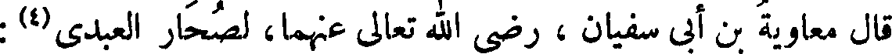
قال معاوية بن أبي سفيان ، رضي الله عنهما، لصحار العبدي(2) :
File: 000482.gt.txt (if the image is defective, simply delete all Arabic text and the line will be excluded)
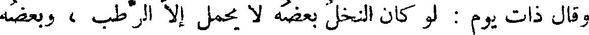
وقال ذات يوم : لو كان النخل بعضه لا يحمل إلا الرطب ، وبعضه
File: 000483.gt.txt (if the image is defective, simply delete all Arabic text and the line will be excluded)
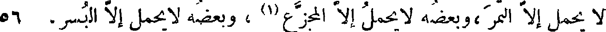
لا يحمل إلا التمر ،وبعضه لا يحمل إلا المجزع(1) ، وبعضه لا يحمل إلا البسر، 56
File: 000484.gt.txt (if the image is defective, simply delete all Arabic text and the line will be excluded)
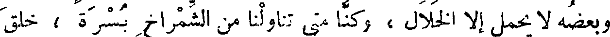
وبعضه لا يحمل إلا الخلال ، وكنا متى تناولنا من الشمراخ بسرة ، خلق
File: 000485.gt.txt (if the image is defective, simply delete all Arabic text and the line will be excluded)
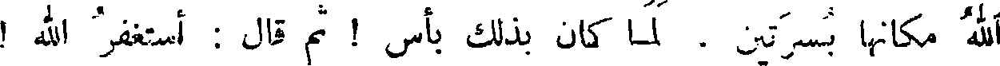
الله مكانها بسرتين ، لما كان بذلك بأس ! ثم قال : أستغفر الله !
File: 000486.gt.txt (if the image is defective, simply delete all Arabic text and the line will be excluded)
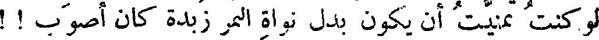
لو كنت تمنيت أن يكون بدل نواة التمر زبدة كان أصوب ! !
File: 000487.gt.txt (if the image is defective, simply delete all Arabic text and the line will be excluded)
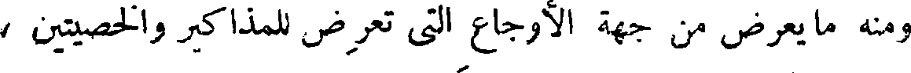
ومنه ما يعرض من جهة الأوجاع التي تعرض للمذاكير والخصيتين ،
File: 000488.gt.txt (if the image is defective, simply delete all Arabic text and the line will be excluded)
حتى ربما امتلخهما طبيب ، وربما قطع إحداهما ، وربما سقطتا جميعا
File: 000489.gt.txt (if the image is defective, simply delete all Arabic text and the line will be excluded)
( نسل منزوع البيضة اليسرى )
File: 000490.gt.txt (if the image is defective, simply delete all Arabic text and the line will be excluded)

من تلقاء أنفسهما .
File: 000491.gt.txt (if the image is defective, simply delete all Arabic text and the line will be excluded)
والعوام يزعمون أن الولد إنما يكون من البيضة اليسرى(2) . وقد
File: 000492.gt.txt (if the image is defective, simply delete all Arabic text and the line will be excluded)
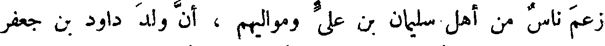
زعم ناس من أهل سليمان بن علي ومواليهم ، أن ولد داود بن جعفر
File: 000493.gt.txt (if the image is defective, simply delete all Arabic text and the line will be excluded)

الخطيب المعتزلي ، إنما ولد له بعد أن نزعت بيضته اليسرى ، لأمر كان
File: 000494.gt.txt (if the image is defective, simply delete all Arabic text and the line will be excluded)
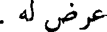
عرض له .
File: 000495.gt.txt (if the image is defective, simply delete all Arabic text and the line will be excluded)
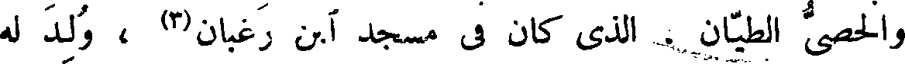
والخصي الطيان . الذي كان في مسجد آبن رغبان(3) ، ولد له
File: 000496.gt.txt (if the image is defective, simply delete all Arabic text and the line will be excluded)
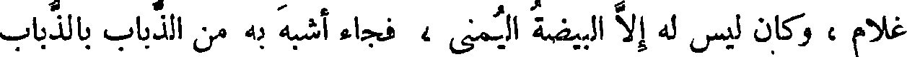
غلام ، وكان ليس له إلا البيضة اليمنى ، فجاء أشبه به من الذباب بالذباب
File: 000497.gt.txt (if the image is defective, simply delete all Arabic text and the line will be excluded)
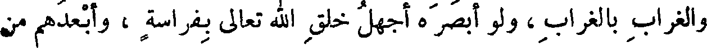
والغراب بالغراب ، ولو أبصره أجهل خلق الله تعالى بفراسة ، وأبعدهم من
File: 000498.gt.txt (if the image is defective, simply delete all Arabic text and the line will be excluded)
قيافة ، ومن مخالطة النخاسين ، أو من مجالسة الأعراب ، لعلم أنه سلالته
File: 000499.gt.txt (if the image is defective, simply delete all Arabic text and the line will be excluded)
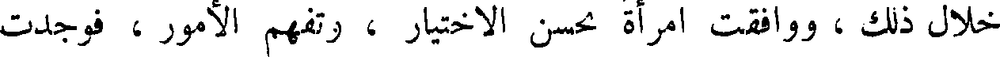
خلال ذلك ، ووافقت امرأة تحسن الاختيار ، وتفهم الأمور ، فوجدت
File: 000500.gt.txt (if the image is defective, simply delete all Arabic text and the line will be excluded)
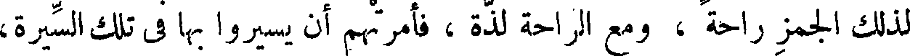
لذلك الجمز راحة ، ومع الراحة لذة ، فأمرتهم أن يسيروا بها في تلك السيرة،
File: 000501.gt.txt (if the image is defective, simply delete all Arabic text and the line will be excluded)
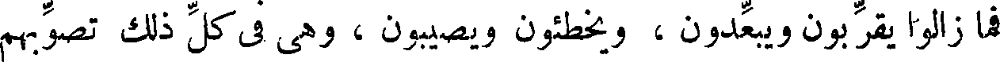
فما زالوا يقربون ويبعدون ، ويخطئون ويصيبون ، وهي في كل ذلك تصوبهم
File: 000502.gt.txt (if the image is defective, simply delete all Arabic text and the line will be excluded)
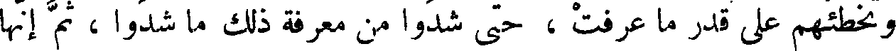
وتخطئهم على قدر ما عرفت ، حتى شدوا من معرفة ذلك ما شدوا، ثم إنها
File: 000503.gt.txt (if the image is defective, simply delete all Arabic text and the line will be excluded)
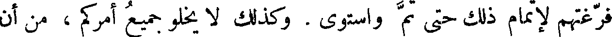
فرغتهم لإتمام ذلك حتى تم واستوى . وكذلك لا يخلو جميع أمركم ، من أن
File: 000504.gt.txt (if the image is defective, simply delete all Arabic text and the line will be excluded)
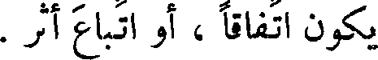
يكون اتفاقا ، أو اتباع أثر .
File: 000505.gt.txt (if the image is defective, simply delete all Arabic text and the line will be excluded)
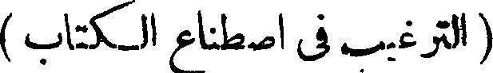
( الترغيب في اصطناع الكتاب )
File: 000506.gt.txt (if the image is defective, simply delete all Arabic text and the line will be excluded)
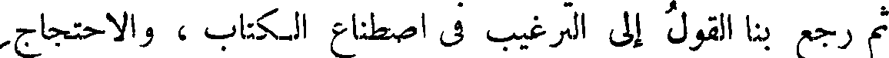
ثم رجع بنا القول إلى الترغيب في اصطناع الكتاب ، والاحتجاج
File: 000507.gt.txt (if the image is defective, simply delete all Arabic text and the line will be excluded)
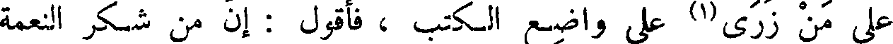
على من زرى (1) على واضع الكتب ، فأقول : إن من شكر النعمة
File: 000508.gt.txt (if the image is defective, simply delete all Arabic text and the line will be excluded)
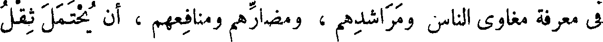
في معرفة مغاوي الناس ومراشدهم ، ومضارهم ومنافعهم ، أن يحتمل ثقل
File: 000509.gt.txt (if the image is defective, simply delete all Arabic text and the line will be excluded)
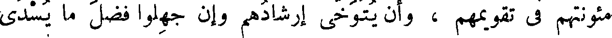
مؤونتهم في تقويمهم ، وأن يتوخى إرشادهم وإن جهلوا فضل ما يسدى
To Save: `Ctrl+s`, make sure to choose `Webpage, complete`!